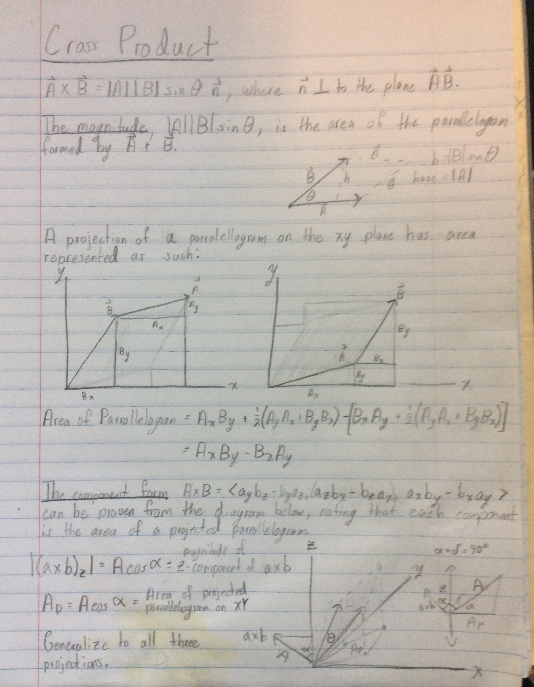

"...the cross product can be thought of as a measure of perpendicularity in the same way that the dot product is a measure of parallelism. Given two unit vectors, their cross product has a magnitude of 1 if the two are perpendicular and a magnitude of zero if the two are parallel." - Wikipedia
The cross product between two vectors is notably defined in two ways.
The first is as a vector orthogonal1 to the two input vectors ($\vec{n}$) with a length equal to the area of the parrallelogram those input vectors outline:
Credit: Wikipedia
$\vec{a} \times \vec{b} = | \vec{a} || \vec{b} | \sin{\theta} \ \vec{n}$
Or it is defined in the 'component form,' which is simply the direct formula for the $x$, $y$, and $z$ components.
$\vec{a} \times \vec{b} = \langle a_yb_z - a_zb_y, \ a_zb_x - a_xb_z, \ a_xb_y - a_yb_x \rangle$
The fact that $\vec{a} \times \vec{b} = | \vec{a} || \vec{b} | \sin{\theta} \ \vec{n} = \langle a_yb_z - a_zb_y, \ a_zb_x - a_xb_z, \ a_xb_y - a_yb_x \rangle $ are the same vectors is not obvious and will be proved here geometrically, requiring only basic knowledge of vector arithmetic and trigonometry.2 The formula $\vec{a} \times \vec{b} = | \vec{a} || \vec{b} | \sin{\theta} \ \vec{n}$ will not be used.

The angle between the z-axis and the cross product vector $\vec{c}$ is $\delta$, and $\gamma$ is the angle between the z-axis and the parallelogram formed by $\vec{a}$ and $\vec{b}$. Since the not projected parallelogam and $\vec{c}$ are orthogonal to eachother...
$\gamma + \delta = 90^{\circ}$
The z-component of $\vec{c}$ can be found with just the knowledge of $| \vec{c}| = A$ and the angle between $\vec{c}$ and the z-axis:
$\vec{c}_z = (\vec{a} \times \vec{b})_z = A \cos{\delta}$
Up next is determining the area of the projected parallelogram:
The angle between the z-axis and the xy-plane is $90^{\circ}$. Since $\delta + \gamma = 90^{\circ}$, the angle between the parallelogram drawn from $\vec{a}$ and $\vec{b}$ and its projection on the xy-plane must be $\delta$.
Since the angle between two planes (xy-plane and parallelogram) is constant, the projected parrallelogram's area can be defined in terms of $A$ and the angle $\delta$ through the expression:
$A_{xy} = A \cos{\delta}$
...as if the parrallelograms were the base and hypotenuse of a right triangle.
All that's left is to find the area of the projected parallelogram in terms of its components to show that the value obtained starting with the trigonmetric defition is the same as the component definition.

Subtract the shaded areas on the right from the left:
$A_{xy} = $ $ \frac{1}{2}\vec{b}_x\vec{b}_y $ $ +
$ $ \vec{a}_x\vec{b}_y $ $ +
$ $ \frac{1}{2}\vec{a}_x\vec{a}_y $ $ -
$ $ (\frac{1}{2}\vec{a}_x\vec{a}_y $ $ +
$ $ \vec{b}_x\vec{a}_y $ $ +
$ $ \frac{1}{2}\vec{b}_x\vec{b}_y) $ $
\\ $
$
A_{xy} = \hspace{3.8em} \vec{a}_x\vec{b}_y \hspace{4.2em} - \hspace{4.4em} \vec{b}_x\vec{a}_y \\
A_{xy} = \vec{a}_x\vec{b}_y - \vec{b}_x\vec{a}_y
$
So from a diagram constructed from the trigonmetric definition of a cross product, we have arrived at the component form for the z-axis through clever, yet basic geometry. To obtain the $x$ and $y$ components, the exact same proof can be performed by projecting the parrallelogram onto each of the two other planes ($xz$, $zy$), and again equating that projection to the length of the third component.
One caveat that was glossed over was the fact the area of a parallelogram is always positive, but there is nothing stopping any component in the resultant vector from being negative.
The trigonmetric definition is the source of this ambiguity. It defines a vector $\vec{n}$ only by the attribute that it is orthogonal to $\vec{a}$ and $\vec{b}$, without specifying in which direction. The direction is is determined by the orientation of the coordinate system. More on that can be read at Wikipedia.
I discovered this proof through kmhock's video here. Both of these definitions of the cross product are fundamental, and many basic vector problems are solved by interchanging them, but every proof I could find online up until this one required more advanced concepts in linear algebra than the cross product itself.
It is my view that students should have accessible proofs available. Not only does this proof require a bare minimum of prerequisites, but it is also short and relativly intuitive; one can see how someone with one definition might discover the other.
One cannot build a ground up understanding by relying on advanced techniques to prove basic concepts; to understand a peice of math is to understand how that peice was discovered.
[1] Orthogonal, perpendicular, normal, crosswise, transvere, right-angled, etc.
[2] Requiring no more than what would be taught up to being told of this equivalence in a typical university course. It is not typical to initially prove this equivalence.
My original notes: 
{kind=link}